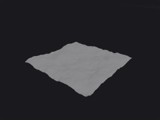

Image#
Bridges between ComfyUI images and the plugin.
1 nodes.
Contents#
- Heightfield from Image (PCG) — Builds a displaced grid whose height comes from the brightness of an image.
Nodes#
Heightfield from Image (PCG)#
PCG_HeightfieldFromImage · category PCG/image
Builds a displaced grid whose height comes from the brightness of an image.

Bridges image generation and geometry: the height map can come from any ComfyUI sampler. The image is sampled bilinearly at resolution x resolution grid points, brightness is the average of the RGB channels, and the point's Y is that brightness times Height. The grid lies in the XZ plane. Point normals are computed, and the raw brightness is stored in the point attribute height. Only the first image of a batch is used.
Inputs
| Input | Type | Description |
|---|---|---|
image | IMAGE | Height map; brightness is the mean of RGB. |
Outputs
| Output | Type | Description |
|---|---|---|
geo | GEOMETRY | Displaced grid with normals and a height point attribute. |
Parameters
| Parameter | Type | Default | Description |
|---|---|---|---|
Size size_x size_z | float [0.001..] | 100, 100 | Size of the grid along X and Z in world units. |
Height Scale height | float | 20 | Multiplier applied to the brightness (0..1) to get the displacement along Y. Negative values invert. |
Grid Resolution resolution | int [2..2049] | 129 | Number of points along each side of the grid. |